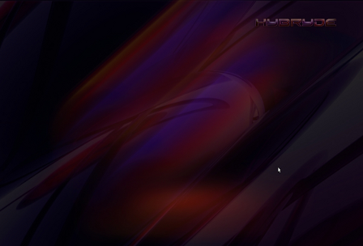

Openbox is an extremely fast, flexible and pleasant window manager (WM). This minimal graphical interface is consistent in more ways than one. Very lightweight, it is self-sufficient and also significantly speeds up Gnome's responsiveness when it replaces Metacity. It doesn't have a taskbar by default, but it's possible to access windows with the shortcut alt+tab, or by adding a custom taskbar. :-) Openbox, either on its own or as a window manager for Gnome, is ideal for those who own older computers. while wishing to use Gnome, or for those who want a minimal configuration, in order to best preserve the battery of their laptop.
